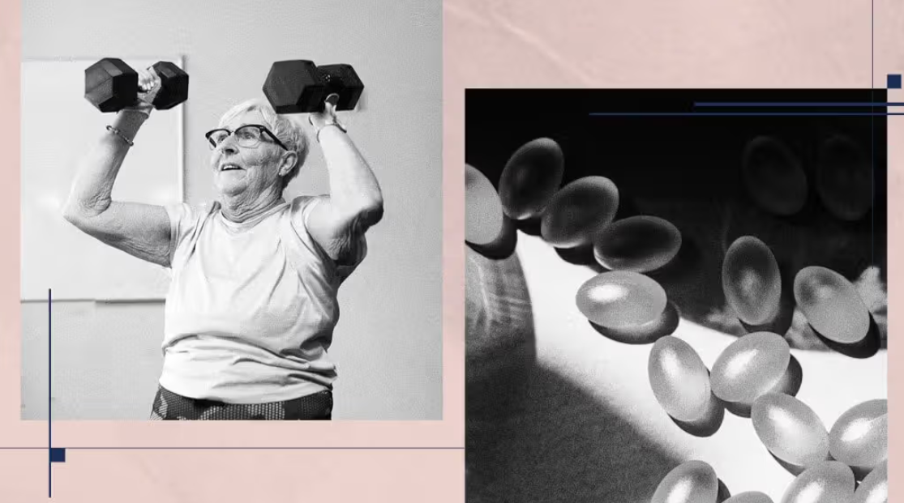

Calcium and Vitamin D Supplements Provide 'Little to No Benefit' for Aging Bones: Major Review
A BMJ analysis of 69 clinical trials involving nearly 154,000 adults found that calcium, vitamin D, or their combination offered no meaningful protection against fractures or falls.

Millions of older adults take daily calcium and vitamin D supplements to protect their bones. A comprehensive review published in The BMJ now suggests that this widespread practice may offer very limited benefit. Researchers analyzed data from 69 previously conducted clinical trials encompassing nearly 154,000 adults and found that vitamin D, calcium, or their combination provided "little to no meaningful protection" against fractures or falls.
What the Study Found
The BMJ review concluded that calcium supplements alone, vitamin D supplements alone, or their combination had no statistically significant effect on reducing hip fractures, vertebral fractures, or falls in older adults living independently. The findings held across different dosages and durations of supplementation.
This does not mean calcium and vitamin D are unimportant — both are essential nutrients. But the study suggests that for most older adults who are not clinically deficient, supplements do not meaningfully lower fracture risk beyond what a balanced diet and an active lifestyle provide.
What Actually Protects Aging Bones
Experts commenting on the findings emphasised that bone health requires a multi-faceted approach that supplements alone cannot deliver. The most effective strategies include regular strength training and weight-bearing exercise, balance training to reduce fall risk, adequate protein intake — at least 1.0-1.2 grams per kilogram of body weight daily for older adults — and maintaining a healthy body weight. Falls are the second leading cause of unintentional injury-related death worldwide, making fall prevention at least as important as bone density.
For people with diagnosed osteoporosis or vitamin D deficiency, supplementation remains clinically appropriate under medical supervision. The BMJ findings apply to the general population of older adults taking supplements for prevention, not to those with specific medical needs.
Source: Medical News Today — "Calcium, vitamin D supplements provide 'little to no benefit' for aging bones: study" (medicalnewstoday.com). Study: BMJ. Content adapted for The Wellness Post.